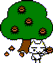

 Site Owner's Diary
January 7, 2026
Toro Cat Club has returned, 18 years later!
Pumpkin writing here. I have made some improvements to this Toro website by Stephanie Yeh
Replaced Chinese text with English translations, fixed dead links with Internet Archive and more!
I hope this improves accessibility and gives you more silly Toro content to look at.
The source code is public on GitHub. All website credit goes to Stephanie and Toro Inoue credit to Sony/BeXide Inc.
July 03, 2008
etc. will update the download area
You are welcome to download the blog gadgets
I do not often see "old" messages so missed a lot of your questions
Jan-20-2005
1:30PM Toro meow~
Update: Mouse Icon Section
Hope you're satisfied!
Phew~ Finally updated the webpage!
I'm really not just lazy, haha!
Leave lots of comments, everyone!
Happy New Year 2005!